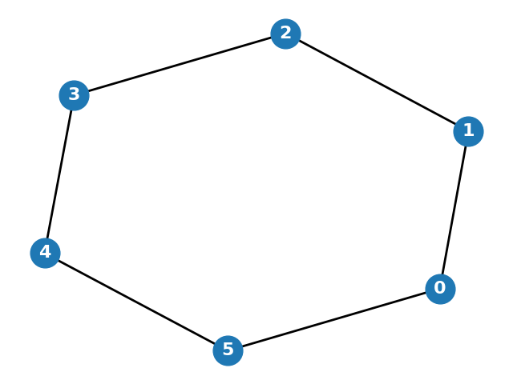

Which of the following best describes the 'cut ratio' of a graph cut \((S, S^c)\)?
What is the isoperimetric number (or Cheeger constant) of a graph \(G\)?
What does the Cheeger Inequality establish?
Given a graph \(G\) with \(n\) vertices and maximum degree \(\bar{\delta}\), what is the range of the second smallest Laplacian eigenvalue \(\mu_2\) according to the Cheeger Inequality?
In the context of spectral graph theory, what is the Fiedler vector?
In the graph-cutting algorithm based on the Fiedler vector, how is the graph embedded in \(\mathbb{R}\)?
What is the range of possible cuts considered by the graph-cutting algorithm based on the Fiedler vector?
Consider the following graph:
What is the isoperimetric number (Cheeger constant) of this graph?
What is the main advantage of the graph-cutting algorithm based on the Fiedler vector compared to finding the cut that minimizes the cut ratio directly?
What is the minimum bisection problem?
Which of the following is the relaxation of the minimum bisection problem presented in the text?
In the proof of the easy direction of Cheeger's Inequality (\(\mu_2 \leq 2\varphi_G\)), how is the test vector \(x\) constructed?